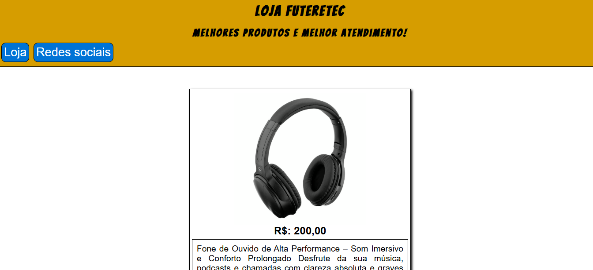

Projetos

2026
Projeto Android
Projeto desenvolvido no curso de HTML5 e CSS3 do Curso em Vídeo, sob orientação do professor Gustavo Guanabara. A proposta foi criar uma página informativa
ver Mais
sobre a história do mascote do Android, aplicando HTML5 semântico com tags como header, main, article e footer. Durante a construção, treinei a importação de fontes externas via Google Fonts e arquivos locais com font-face, além de trabalhar com variáveis CSS na regra root, criação de degradês com linear-gradient e incorporação de imagens e vídeos responsivos.
2026
Projeto Cordel
Página interativa criada para apresentar os poemas de Milton Duarte, focando no aprendizado de técnicas visuais avançadas com CSS. Ver Mais
O principal objetivo foi aplicar o efeito Parallax na prática, utilizando a propriedade background-attachment fixed para manter a imagem de fundo estática enquanto o texto rola na tela. Também treinei o dimensionamento de imagens de fundo com background-size cover, alinhamento de blocos de texto e controle de contraste entre elementos para garantir boa leitura.

2026
Projeto Login
Interface de formulário de autenticação desenvolvida para exercitar a criação de layouts responsivos e centralizados.Ver Mais
O projeto abordou a estruturação de formulários com tags input, label e button, a centralização de elementos na tela utilizando posicionamento absoluto e transform, e o uso de Media Queries para adaptar a visualização entre dispositivos móveis e monitores maiores. Também foi treinada a inclusão de ícones nos campos de entrada para melhorar a usabilidade

2026
Projeto Loja Virtual
Projeto Desenvolvido Para treinar HTML e CSS, com Java Script e Imagens Locais e externas links e caixas de Formulario.